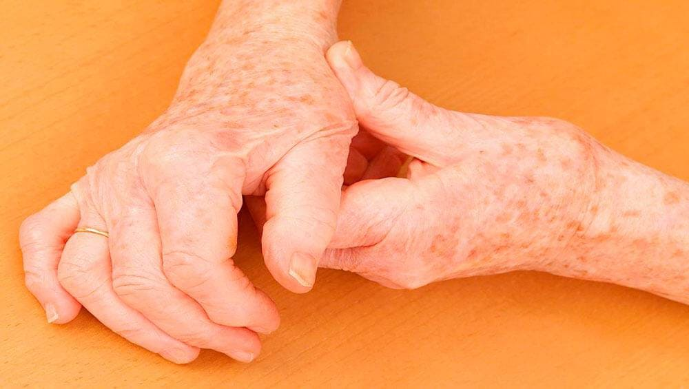

СТРАХОТЕН ОТЧЕТ
•
РАЗСЛЕДВАНЕ
Забранено е да се говори за това лекарство за стави!
(!!!) Тази статия може да бъде премахната по всяко време, така че, моля, прочетете я внимателно!

Как ставните проблеми станаха тема номер едно в България?
Всяка МИНУТА двама души в света стават инвалиди, защото не са започнали да лекуват ставите си навреме.
Отминаха дните, когато лекарствата бяха създадени, за да ЛЕКУВАТ. Бизнес ерата настъпи. Учените и лекарите бяха заменени от мениджъри и рекламисти.
Сега лекарствата се приготвят така, че не дай Боже да не излекуват напълно човека. Временно облекчаване на симптомите – да! Пристрастяване
- разбира се! Развитие на нови болести - определено! Това са истинските цели на съвременната медицина.
На пръстите на едната си ръка можете да преброите учените, които разработват лекарства и които действително лекуват болести и трайно облекчават болките в ставите.
Но тези ресурси са предназначени да се превърнат в "количествени" стоки, защото масовото им производство не е печелившо за никого! Нито лекари, нито други институции,
и дори, не дай си боже, аптеките.
Цялата бизнес медицина се въоръжи срещу едно уникално лекарство. Лекарите убийци се ядосват, когато чуят името "".
Те знаят, че ще ги лиши от лична печалба и ще прекрати способността им да измъкват пари от пациентите.
Защо ме болят ставите?
Главният специалист по лечение на стави и гръбначен стълб в България се съгласи да ни разкрие най-страшната тайна на аптечната мафия и бизнес лекарите.
Никога няма да чуете тази тайна нито в държавна болница, нито в скъп частен медицински център.
Илиян Цветков.
Професор, доктор на медицинските науки, ръководител на катедрата по клинична микология на Държавния медицински университет.
Носител на наградата "Медицинско постижение на десетилетието". Той е автор на първия иновативен инструмент ""
за клиничния опит на артроза, артрит, остеохондроза и болки в ставите с нова етиология. Голям експерт. Натуропат.
-д-р Цветков, здравей и благодаря, че говориш за нашето списание! Кажете ни каква е тайната, старателно скрита от лекарите и аптечната мафия?
- Основната мистерия е ПРИЧИНАТА за болките в ставите. Никой корумпиран лекар няма да ви каже истината ЗАЩО БОЛЯТ СТАВИТЕ. Причината е проста и ясна
е през 1989 г., но тогава бившата държава започва да се разпада и те се опитват да забравят за уникалното откритие.
От 90-те години на миналия век западните фармацевтични компании наводниха БиХ. пазара с неговите безполезни и често опасни лекарства. За тях това откритие е като кост в гърлото,
и всяка година те харчат милиони долари, така че, не дай си Боже, никой учен или лекар да не говори за това откритие пред обществеността.
– Разкажете ни нещо за това уникално откритие! Защо наистина болят ставите?
–
Основната причина за заболяванията на ставите и гръбначния стълб е "замърсяването" на лимфната система на тялото.
Тази теория е предложена през 1977 г. от местния невролог Каложан Минчев. През 1989 г. е извършено първото клинично изпитване в Научноизследователския институт в Сараево
експеримент в света за пречистване на човешка лимфна течност.
В резултат на експеримента беше доказано, че след очистване на лимфата от 83-97%, скоростта на възстановяване на ставната тъкан (хрущяли, кости, нерви) се увеличава11 пъти!
Представете си проста ситуация:
Какво се случва, ако не смените маслото в двигателя на колата си? Просто е! Ще става все по-зле и по-зле. Частите на двигателя ще се повредят и ще станат безполезни.
Същото е и с нашата лимфна течност. Замърсяването и токсините, които се натрупват в лимфната система с годините, тровят тялото. Първи са засегнати ставите и гръбначният стълб.
Тъй като хрущялът е много чувствителен към примеси, които могат да бъдат част от лимфната течност.
Мръсната лимфа причинява:
- Възпаление на ставите (артрит, подагра)
- Разрушаване на хрущяла (артрит, херния, протрузия)
- Натрупване на сол (остеохондроза)
- "Изсъхваща" ставна течност
- Костна дистрофия (остеопороза)
В 9% от случаите замърсяването на лимфната система причинява онкологията. "Мръсната" лимфа е основният фактор за развитието на саркома - тумор на съединителната тъкан и костния мозък.
Лечение на ставите, какво не трябва да се обсъжда?
- Разкажете ни за уникалната разработка на вашия екип - гел "". Вярно ли е, че една терапия с този гел възстановява дори ставите, за които сте загубили надежда?
- Да, така е, ако го използвате ЕЖЕДНЕВНО в продължение на 1,5-2 месеца ставите ви ще са като нови и ви гарантирам.
е уникална разработка на нашия институт за прочистване на лимфата от токсини и иницииране на регенерация на ставите. е смес от четири естествени съставки. В правилните пропорции те активират клетъчните процеси на регенерация и обновяване на ставната тъкан.
е естествен активатор на клетъчното възстановяване на ставите и хрущялите.
Например, съставът на гела включва златна кошница. Това е невероятен естествен лимфен дренаж. Има способността да абсорбира, има способността да събира като гъба замърсяванията от лимфата.
Само 10 грама златна кошничка премахва 75-90 грама токсини от лимфата.
Най-важното е, че не лекува конкретно заболяване, а почиства лимфната система, осигурява хранителни вещества на хрущяла и костната тъкан. Активира възстановителния механизъм на организма, подпомага самовъзстановяването.
Може да се каже, че терапията с gel е много подобна на терапията със стволови клетки, само че без грубата намеса в човешката ДНК.
Това е основната разлика от продуктите на химическа основа. Химията принуждава тялото да постигне краткотраен резултат, но уврежда и други органи. Фармацията се занимава с последиците, като пренебрегва причините. Опитва се да постави каруцата пред коня.
е напълно натурален, хармоничен с тялото и не ви кара да правите нищо против волята си. Напротив, подкрепя и помага по всякакъв начин, засяга основата на основата - лимфната система.
- артрит и артроза на различни стави: раменно-скапуларна периартроза, артрит, епикондилит, подагра;
- остеохондроза на гръбначния стълб с рефлексен радикуларен синдром, засягащ цервикалната, гръдната или лумбалната част ;
- деформираща остеоартроза;
- коксартроза;
- бурсит;
- миозит;
- ревматизъм;
- разкъсвания и издатини на гръбначния стълб;
- паратенонит ;
- тендинит;
- болест на Бехтерев;
Излекувайте ставите си само за 45 дни!
- Колко време отнема възстановяването на ставите с Nautubon?
- Средно от 45 до 60 дни. Необходимо е да се прилага търпеливо и редовно, ефектът няма да бъде мигновен. Средно са необходими 1,5-2 месеца, за да получите кумулативната доза и да започнете процеса на възстановяване.
След това процесът протича сам. Започва естествен процес,
самовъзстановявайки се, хрущялната тъкан получава нови клетки и започва да се регенерира, подпомагайки процеса на възстановяване с години.
Това, което се нарича "тъканно дишане", е когато тъканите приемат толкова храна, колкото им е необходима.
След два месеца терапия с Nautubon можете да забравите за болките в ставите, гърба, гръбначния стълб и неравностите за следващите 10 години.
Разбира се, всичко зависи от вашия начин на живот, хранене и лоши навици. Но за обикновения човек, който не е алкохолик или професионален спортист, идва със 7-10 години гаранция.
Значението на действието навреме
Имаше един пациент, само на 59 години. В продължение на около 20 години той страда от остеохондроза на шията, постоянно главоболие, пулсиращо усещане под брадичката, пулсиращо под лопатката. Както и натиск. Общо взето имаше всякакви усложнения.
Обърна се към мен за съвет, погледнах рентгена, изписах му Наутубон, казах му да го използва 45 дни и да дойде отново на рентген на шията.
За съжаление, той не е имал време да започне лечението. изчезна, преди да поръча. И буквално седмица по-късно той случайно обърна главата си и измести прешлен, който притисна цервикалната аорта. Той получи инсулт. Той оцелява, но цялата дясна страна на тялото му остава парализирана.
Ако е в черния списък на всички фармацевти, откъде мога да го купя?
- Опитахте се да уредите продажбата на Nautubona чрез аптеки, защо не успяхте?
- Отидох на среща с търговския мениджър на голяма верига аптеки. Тоя такъв безсрамник, дето нищо не разбира от медицина, но ми казва високомерно - човече, не ми разваляй настроението, не ми трябват ничии лекарства. Махай се, казва, не се забърквай. Не искам да продавам такива лекарства.
Целият фармацевтичен пазар отдавна е разделен от международни корпорации. Дават големи подкупи, за да не дай Боже да нямат конкуренция дори в най-малката форма. Плащат на всички. Фармацевти, лекари, някои учени, чиновници, политици.
Хора от аптечния сектор ми казаха, че нашият е в черния списък на всички аптеки в България. Продавачите са специално обучени да опетнят лекарството, ако клиентите попитат за него.
Затова можете да поръчате само от производителя онлайн. Решихме, че това е най-добрият начин. Поръчвайки директно от производителя, вие гарантирано ще се предпазите от закупуване на фалшив продукт. Второ, без цените на посредниците спекуланти, цената е три до пет пъти по-евтина при онлайн поръчка!
Данък за богатите
- Знаем, че един месечен курс с гел в клиника в Сараево струва много. Откъде идват тези цени?
- Нашият отдел продава Nautubes на частни клиники на максимални цени. Наричаме го справедлив данък. Той ни позволява да финансираме изследвания и да продаваме Nautubes на обикновени хора на достъпна цена.
Богатите хора, които могат да платят цената, се лекуват в скъпи клиники. За тях 700-800 лева са малко.
Всъщност ние субсидираме разходите за производство на Nautubona за обикновения човек за сметка на частните медицински центрове. И това според мен е голямо предимство.
Това е по-добре, отколкото да продаваш на фирми с отстъпка на едро, пак да крадеш от обикновените хора. Ние правим обратното. Нека богатите плащат повече, а обикновените хора плащат по-малко. Мисля, че това е справедливо.
-Точно така, съгласен съм. И така, какви са ползите от гела за обикновения човек?
- Имаме много категории граждани, които могат да получат s за на страхотно действие, което направихме възможно по описания по-рано начин.
Така че не отлагайте, поръчайте сега. За съжаление тази социална програма няма да продължи дълго.
Тази година беше произведен в по-малки количества от обикновено и по-голямата част от него остана в склада на нашата клиника.
Кой може да купи „“ за ?
- Жени над 45 години;
- Мъже над 41 години;
- Хора с увреждания от I-II група независимо от възрастта;
- Ветерани от войните и демобилизирани бойци
- Всички жители на България над 37 години
КОМЕНТАРИ: